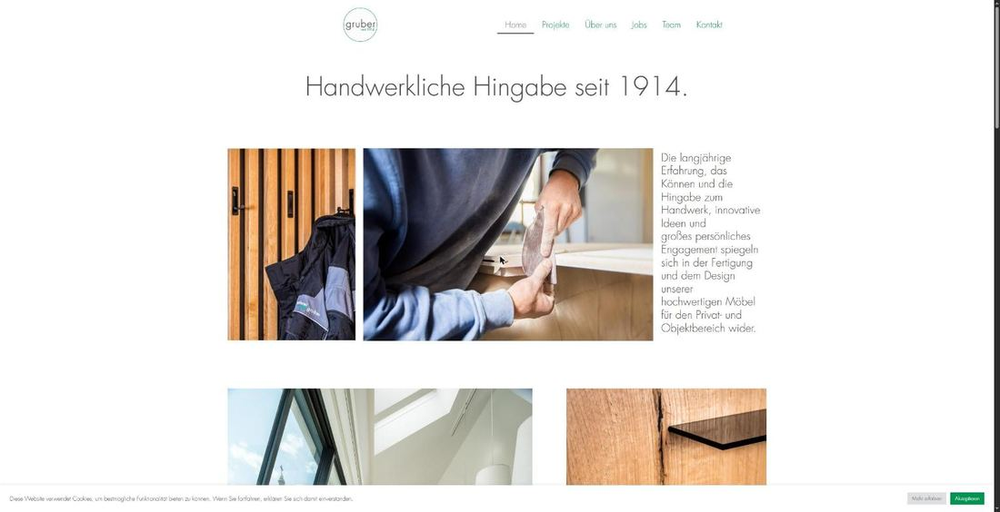
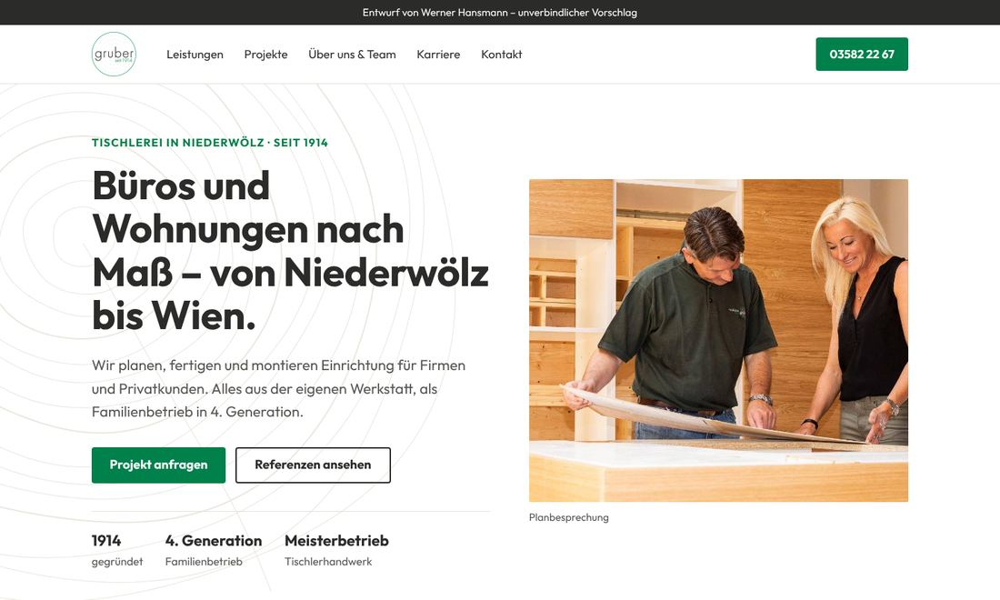
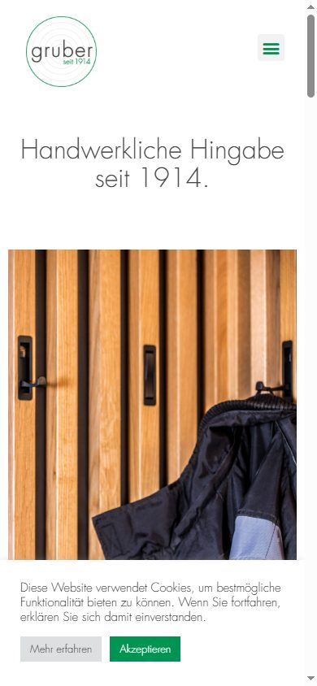
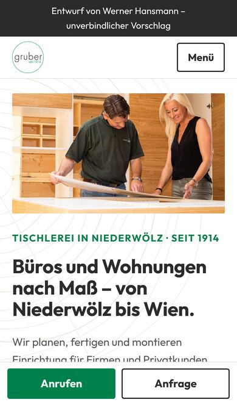

Homepage-Vorschlag für die Tischlerei Gruber GmbH
Was die neue Seite besser macht
Ihre jetzige Homepage hat starke Fotos und beeindruckende Referenzen. Der Vorschlag holt diese Stärken nach vorne und macht es Kunden und Bewerbern leichter, Sie anzurufen.
Die 3 wichtigsten Verbesserungen
- Man sieht sofort, was Sie machen.Oben steht klar: Tischlerei in Niederwölz, Büros und Wohnungen nach Maß, seit 1914. Zwei Wege führen weiter – Büro & Objekt oder Privat.
- Ihre Referenzen stehen im Vordergrund.Johnson & Johnson, Thales, Drei, Waagner Biro – solche Namen überzeugen neue Kunden. Jetzt stehen sie mit Fotos schon auf der Startseite.
- Anrufen geht mit einem Daumendruck.Am Handy ist unten immer „Anrufen“ und „Anfrage“ zu sehen. Dazu: eigene Karriereseite für Ihre offenen Stellen und bessere Auffindbarkeit bei Google.
Vorher und nachher – am Computer


Vorher und nachher – am Handy


Bewertung: heute und Vorschlag
Zehn Punkte, die eine gute Firmen-Homepage ausmachen, jeweils von 0 bis 10.
| Punkt | Heute | Vorschlag | Was sich ändert |
|---|---|---|---|
| Sofort verständlich | 4 | 9 | Oben steht, wer Sie sind, was Sie machen und wo. |
| Nächster Schritt | 2 | 10 | Telefon-Knopf oben, am Handy feste Leiste mit „Anrufen“. |
| Am Handy | 4 | 9 | Große Schrift, Telefonnummer antippbar, kein Cookie-Fenster nötig. |
| Texte | 3 | 9 | Kurze Sätze mit echten Fakten statt allgemeiner Sprüche. |
| Vertrauen | 6 | 9 | Acht Projekte mit Fotos und kurzer Beschreibung, dazu Teamfoto und 1914. Eine 10, sobald Jahr je Projekt und Kundenfreigabe da sind. |
| Gestaltung | 7 | 9 | Ihr Logo, Ihr Grün, Ihre Fotos – dazu dezente Jahresringe wie im Logo. |
| Aufbau & Menü | 6 | 10 | Fünf klare Menüpunkte, neu mit „Leistungen“. |
| Ladezeit | 6 | 9 | Verkleinerte Bilder, keine Baukasten-Technik im Hintergrund. |
| Barrierefreiheit | 4 | 9 | Bildbeschreibungen, gute Kontraste, mit Tastatur bedienbar. |
| Google & Rechtliches | 3 | 9 | Aussagekräftige Seitentitel mit Ort. Eine 10, sobald Öffnungszeiten und vollständiges Impressum da sind. |
Was wir von Ihnen noch brauchen
Im Entwurf ist alles, was fehlt, [in eckigen Klammern] markiert. Erfunden ist nichts.
- Liste Ihrer Leistungen (Objekt und Privat: z. B. Küchen, Schränke, Türen, Innenausbau?)
- Öffnungszeiten
- Je Referenzprojekt: Jahr (bei Drei, Waagner Biro und Hertha Turnaus auch Ort)
- Ihre Freigabe, die Kundennamen zu nennen
- Arbeiten Sie nach Plänen von Architekten und Ausschreibungen?
- Einsatzgebiet der Montage
- Wo findet die Beratung statt – beim Kunden, in der Werkstatt?
- Meilensteine der Firmengeschichte (2. und 3. Generation …)
- Porträtfoto der Chefleute, auf Wunsch Namen im Teamfoto
- Gehalt laut Kollektivvertrag je Stelle (Pflichtangabe in Stelleninseraten)
- Vorteile für Mitarbeiter
- Bestätigung „Meisterbetrieb“ (vom Firmen-LKW übernommen)
- Impressum: Firmenbuchgericht, Geschäftsführung, Gewerbe, Behörde
- Rechte an den Fotos (u. a. Lukas Schaller) und Bildnachweise je Projekt
- Projekt „Hertha Turnaus“: richtiger Kundenname?
- Wer verwaltet heute Domain und Hosting?
Aufwand für die Umsetzung: mittel
- TechnikIhre Seite läuft bereits auf WordPress. Der neue Auftritt wird dort neu aufgebaut – Domain und E-Mail bleiben, wie sie sind.
- Selbst ändernProjekte, Stellen und Texte können Sie danach selbst in WordPress eintragen. Ich zeige Ihnen, wie es geht.
- Hosting & DomainBleibt beim bisherigen Anbieter oder zieht um – je nachdem, was für Sie einfacher ist.
- Laufende WartungWordPress braucht regelmäßige Updates und Sicherungen. Das kann ich laufend übernehmen.
- Was ich von Ihnen braucheDie Liste oben, ein Gespräch von ca. einer Stunde und den Zugang zur bestehenden Seite.
- DatenschutzKeine Tracker, keine eingebettete Google-Karte, Schriften auf dem eigenen Server – damit braucht die Seite kein Cookie-Fenster.